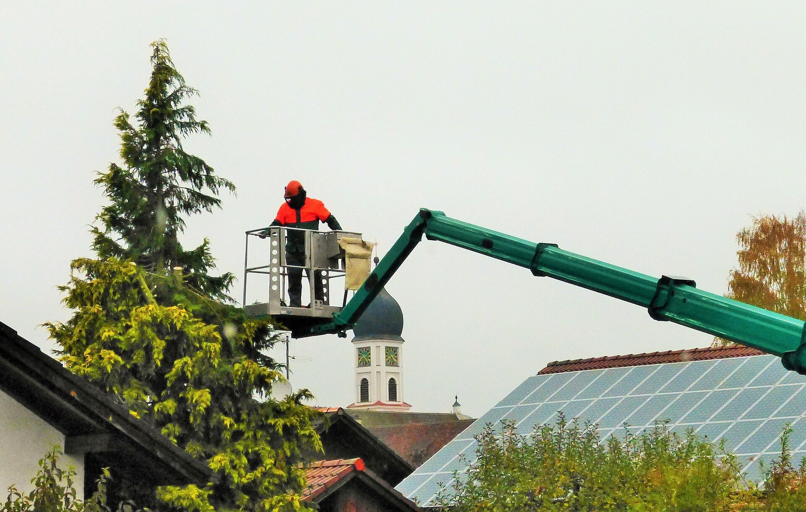

Drzewa
Wycinka, przycinanie i cięcie korony, także drzew rosnących tuż przy domu, płocie albo linii.
Wycinka drzew →
W całości albo kawałkami od góry, gdy obok stoi dom, garaż albo płot.
Cięcie korony →
Konary nad dachem, suche i połamane gałęzie, przerzedzanie korony.
Gałęzie i drewno →
Zabieramy gałęzie albo układamy drewno na posesji, jak ustalimy.
Oględziny →
Przyjeżdżamy, oglądamy drzewo i dojazd, podajemy cenę.